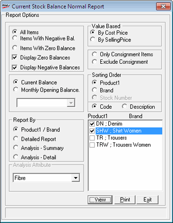

The Stock Balance Normal Report provides information on quantity and value of the items currently in stock. The selection criteria for report generation are product, brand, date range, item attributes, and so on. A detailed list or summary of items in stock can be produced based on cost price or selling price. Three sort orders are available for reporting.
How to reach: Reports > Stock > Balance
The Current Stock Balance Normal Report window is displayed.

Select All Items, Items With Negative Bal. or Items with Zero Balance. If All Items is selected, then you can choose
Display Zero Balance to display the items with zero quantity
Display Negative Balance to display the items with negative quantity
Value Based: Select By Cost Price or By SellingPrice to display cost prices or selling prices in the report.
Select Current Balance or Monthly Opening Balance. If Monthly Opening Balance is chosen, select the month from the drop down list.
Select Only Consignment Items or Exclude Consignment to include only the consignment items in the report or to exclude the consignment items in the report.
Report By: Select Product / Brand, Detailed Report, Analysis - Summary or Analysis- Detail to include the corresponding information in the report. On selecting any of these attributes, the product-brand list is displayed on the right. Select the required Product-Brand combinations in the list. On selecting Analysis - Summary or Analysis - Detail, the Analysis Attribute gets activated.
Analysis Attribute: Select Fibre, Finish, Colour Base, Styling or Usage to choose the required items from the corresponding list.
Sorting Order: Select Product, Brand or Stock Number to sort the lines in the report. Notice that the report can be sorted on Stock Number only if you have chosen Detailed Report.
Select the Code or Description to be displayed in the report.